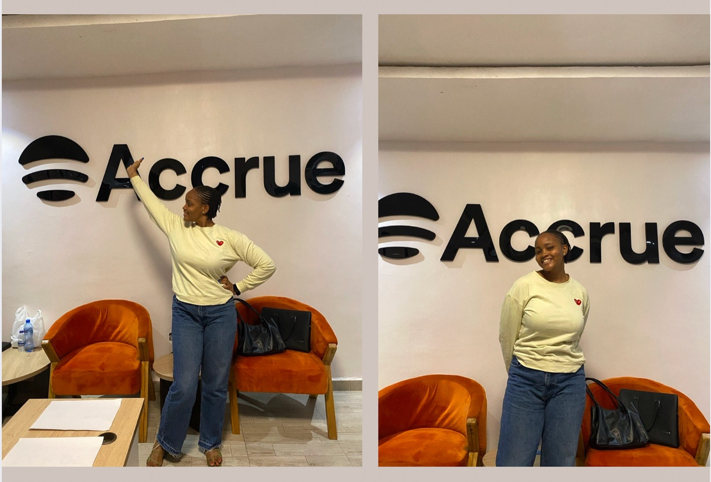
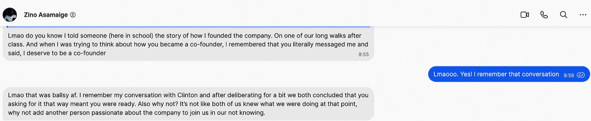

Closed mouths don’t get fed
I wrote about how helping my friend with his startup idea somehow turned into me asking to be a co-founder.

In April/May 2021, my friend Zino told me about a startup idea and asked if I’d like to help market it as a fun side project. At the time, I had a 9-to-5 and had recently transitioned to a product marketing role at Helicarrier.
Before product marketing, I accepted a role as a Customer Success Associate after multiple attempts to become a product manager failed. Looking back, I never really liked product management. I just wanted to do it because everyone and their aunties wanted to be product managers in 2021.
A few months into my CS role, I realised that while I enjoyed it, it wasn’t something I wanted to do long term. However, I liked the idea of getting customers to sign up for our app, so I assumed product marketing would be a great fit for me.
I spoke with my employers about this new interest, and they let me transition into a product marketing role at the company. Figuring out how to acquire more users kept me up at night in the best and most exciting ways.
In my CS role, Zino was my boss, and we had built a great working relationship and friendship. Soon after I left CS to pursue my new interest, Zino told me he had an idea for a startup he wanted to build and asked if I’d like to help with marketing as a fun side project.
In 2021, I was a restless, delusional optimist who thought I could change the world and was super excited to do anything, so I said yes immediately.
My product marketing role at my 9-to-5 was exciting, but working on Zino’s business idea felt even more exciting. When I joined the marketing team, the company already had hundreds of thousands of users. Zino’s idea had zero users, and I was so excited by the endless possibilities. I wanted to see what it would be like to grow something from 0 customers to 1,000 and much more.
I think I was too scared to say 100,000 customers because, at the time, I was too inexperienced to think I could grow something to hundreds of thousands of users as my current company had. I graduated from university in May 2021, and I had started working at my 9-to-5 a few months before I graduated.
A few weeks or so into stumbling through the process of figuring out this new fun project, I had come to love it so much and had fallen in love with the idea. It felt like my baby.
So one day, I sent Zino this long text telling him I thought I deserved to be a cofounder because I was just as invested in it as he was. In my mind then, even though he had way more experience than me, neither of us had done this before, so I could be a cofounder too.
Lmao. I chuckle when I think about that conversation now. I’m so proud of how bold I was to have what felt like such an uncomfortable conversation.

Closed mouths don’t get fed. I’m glad I told my employers that I no longer felt like CS was the path for me. I remember having to ginger myself to have that conversation because even bringing it up felt uncomfortable. It was possible it wouldn’t go well, or that the answer would simply be that there was no open role in Marketing for me. I’m happy I didn’t let the discomfort hold me back.
I’m glad I had that uncomfortable conversation with Zino too. Lmao, what was I thinking? I had only a few months of fintech experience. Why did I think I could ask to be a co-founder? I really don’t know. Even if you could argue it was a little silly, I’m glad I didn’t talk myself out of doing what felt like the right thing.
What followed after stepping into this role has been an insane amount of work and learning, and constantly asking myself who sent me and why I didn’t just stay in my 9-to-5 with peace of mind, lmaoo.
When I agreed to help Zino with his idea, I was excited about how much we could grow. But I also couldn’t dare say we’d get to hundreds of thousands of users because apparently, despite being boundlessly delusional, I still had pockets of reality here and there.
Accrue now has over 400,000 users.
I’m grateful for the delusion and boldness that led me here.